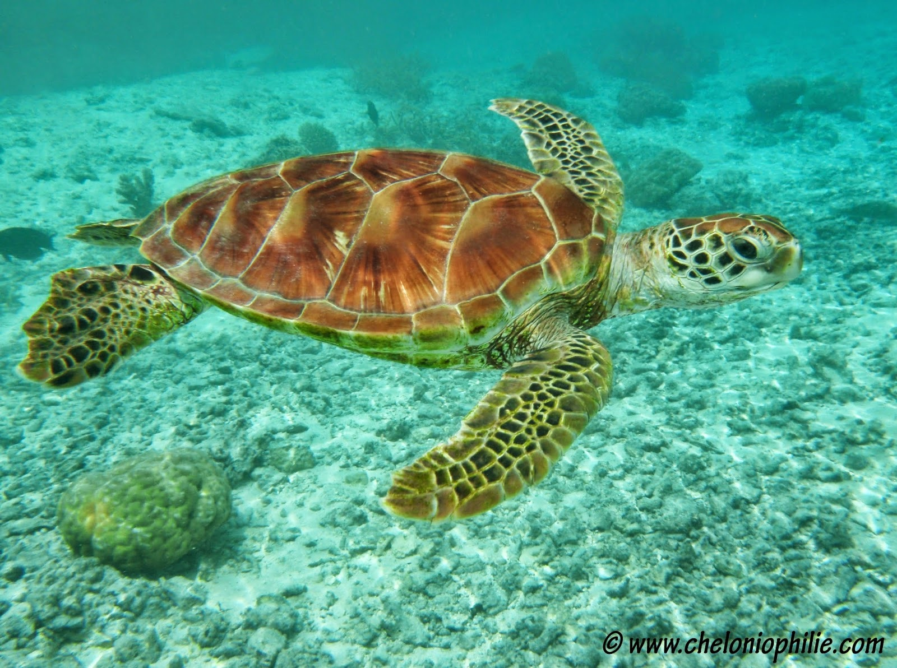

Les tortues vivent sur Terre depuis plus de 200 millions d'années. Certaines vivent sur terre, d'autres dans l'eau douce ou salée. Ce sont des reptiles à carapace dure, qui peuvent vivre très longtemps, parfois plus de 100 ans.
Ces animaux lents mais résistants fascinent les scientifiques comme les amoureux de la nature. Leur carapace les protège des prédateurs et elles possèdent une excellente mémoire pour retrouver leur lieu de naissance.
